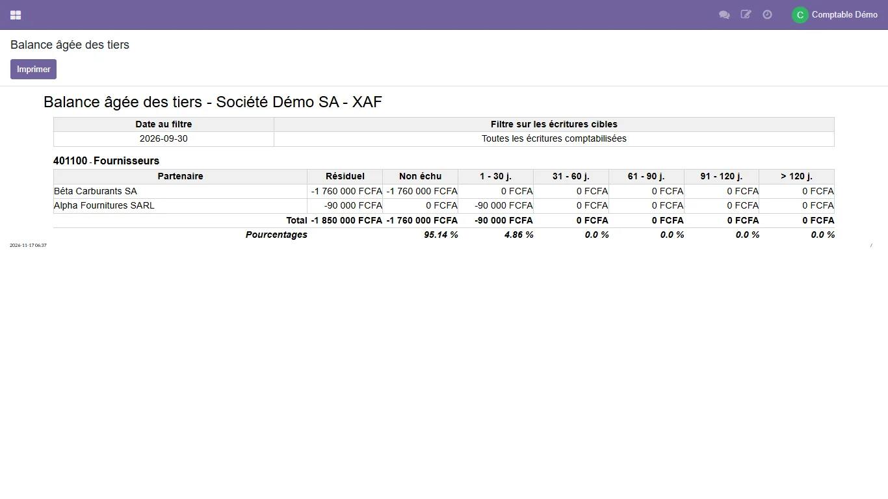

Objectif. Planifier les paiements et repérer les dettes anciennes.
Où dans Odoo 15Facturation › Analyse › Rapports de comptabilité OCA › Balance âgée des tiers

Ce que vous faites
- Même assistant que la leçon 9.3, avec les comptes créditeurs uniquement.
- Lisez les dettes échues : à payer en priorité.
- Un solde débiteur sur un fournisseur signale une avance ou un double paiement.
À vérifier avant de continuer
0 / 1À éviter.
- Ne payez pas une dette ancienne sans vérifier qu'elle n'est pas déjà réglée.
Exercice sur la base de test
Éditez la balance âgée fournisseurs au 30/09/2026.